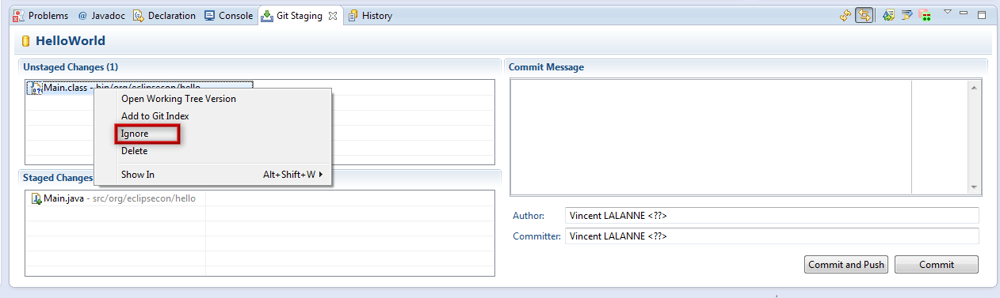

A first commit
- Download, unzip and import HelloWorld-3.zip.
The project contains an already initialized Git repository and Eclipse Java project

- Open the Git Staging view in the Git perspective
- Add the Main.java file to the staged changes
Main.java > Add to Git Index

Note
You can remove and add files from the Staged Changes through drag and drop. - Ignore the Main.class file
Main.class > Ignore

Note
you can create a .gitignore file in the project root and add the line/binto ignore all binary files - Add the new .gitignore file
- Enter a commit message
- Press
Commit